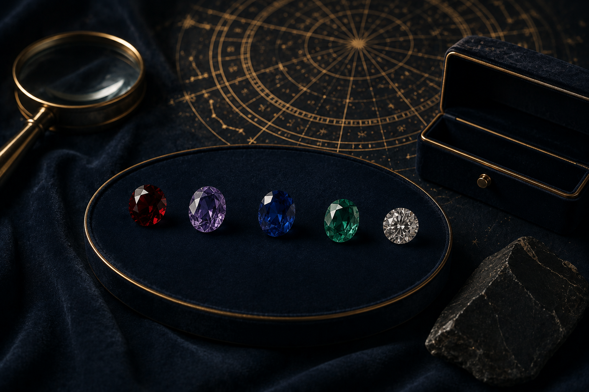
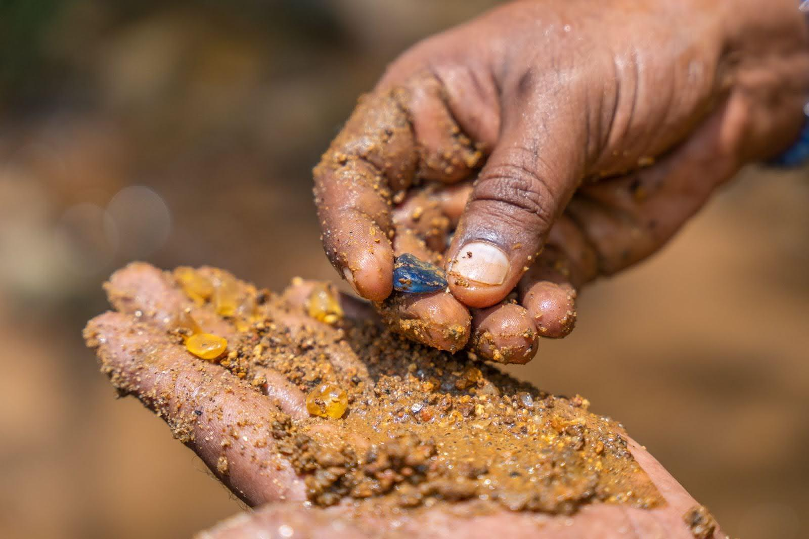
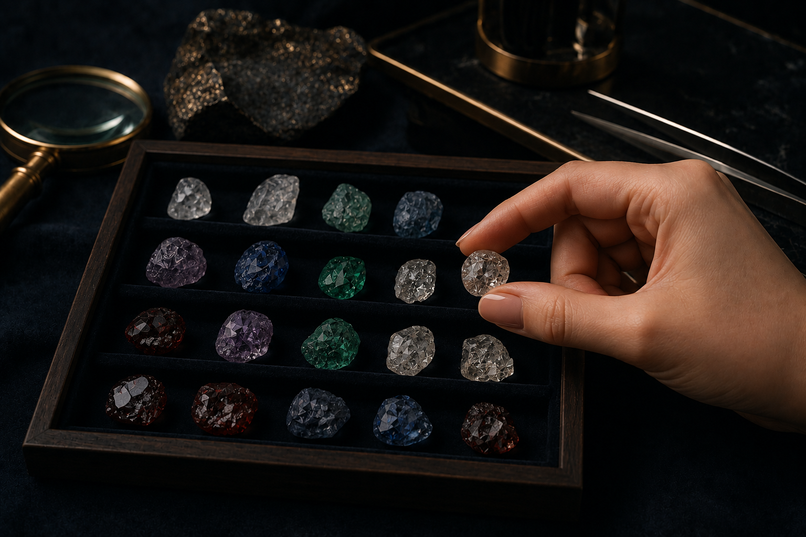
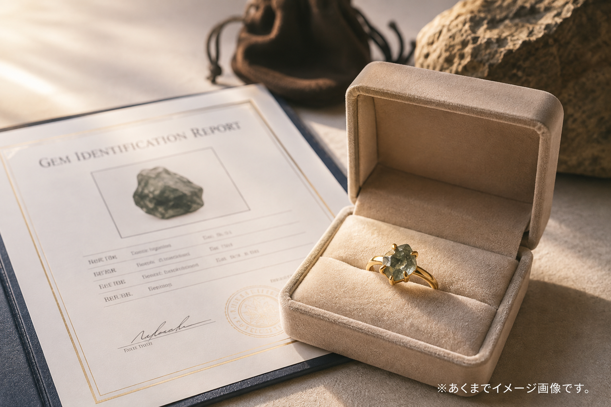
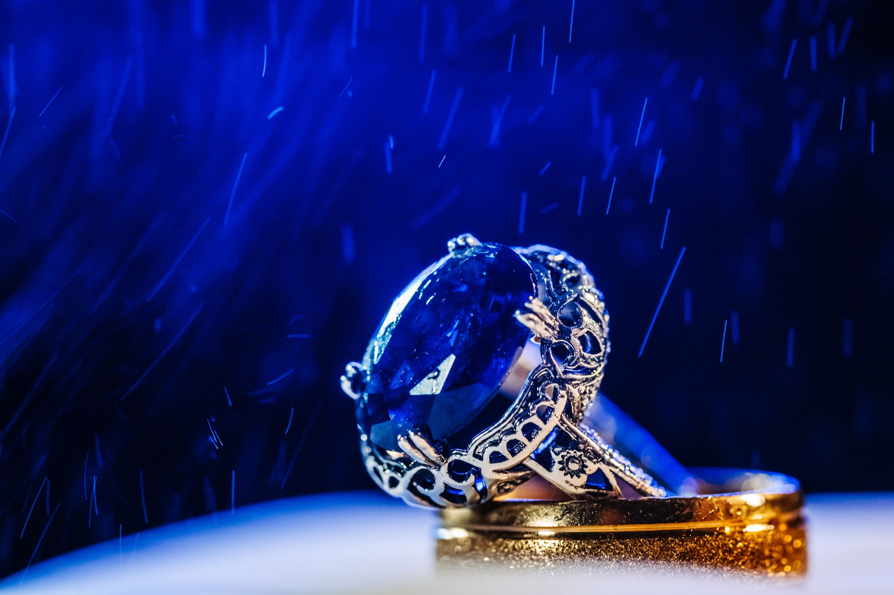

story

scroll
あなたの人生に
忘れられない輝きを。
what
星を読み、五つの石を知る。土を掘り、その中の一石と出会う。選んだ一石を、ジュエリーに仕立てる。
宝石を買うサービスではありません。自分に必要な一石を、取りに行くサービスです。
journey
鑑定から、ジュエリーになるまで。
01 — know
自分に必要な石を知る

02 — discover
鑑定から、必要な5つの石を知る
03 — choose
「スリランカ」or「バーチャル」

04 — dig
自分の石を探す

05 — meet
掘り出された石の中から一石を選ぶ

06 — keep
出会った石をジュエリーとして残す
why
たいていのものは、スマートフォンで買える時代です。掘るという行為には、それがありません。
出るかどうかもわからない土を、自分で掘る。出てきた一石には、その日の時間がまるごと残ります。
why sri lanka
スリランカは、世界有数の宝石産出国です。サファイア、ルビー、キャッツアイ。その多くは、土の中に眠る一つの原石から始まります。
日本とスリランカ、6,500km隔てた二つの島国には、思いがけないほど深いつながりがあります。
二つの島の物語を読む →plan
石の内容と仕立てで、3段階をご用意しています。
standard
石一石と、定番の仕立て。
リング／ペンダント／ピアスに対応。
premium
上質な素材と、デザインの幅。
サイドストーンにも対応。
supreme
上位グレードの一石と、
贅を尽くした仕立て。
astrology
jewel

採掘で出てきた石の中から、メインストーンを選ぶ。研磨し、鑑別書とともに仕立てる。あの日掘り出した石が、生涯の一石になります。
story
begin
星がどの五つを示すのか。それを知るだけでも意味があります。
掘りに行くかどうかは、そのあとで決めてください。
占星術鑑定・神話にまつわる記載は伝承文化に基づく提案であり、効果・ご利益を保証するものではありません。